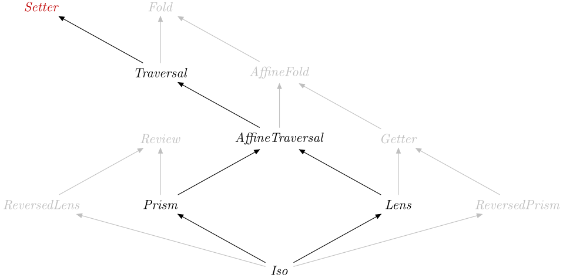

| Safe Haskell | Safe-Inferred |
|---|---|
| Language | Haskell2010 |
Optics.Setter
Description
A Setter S T A BA -> B over a function of type S -> T, applying the function
to update all the As contained in S. This can be used to set
all the As to a single value (by lifting a constant function).
This can be seen as a generalisation of fmap, where the type S
does not need to be a type constructor with A as its last
parameter.
Synopsis
- type Setter s t a b = Optic A_Setter NoIx s t a b
- type Setter' s a = Optic' A_Setter NoIx s a
- sets :: ((a -> b) -> s -> t) -> Setter s t a b
- over :: Is k A_Setter => Optic k is s t a b -> (a -> b) -> s -> t
- mapped :: Functor f => Setter (f a) (f b) a b
- set :: Is k A_Setter => Optic k is s t a b -> b -> s -> t
- set' :: Is k A_Setter => Optic k is s t a b -> b -> s -> t
- over' :: Is k A_Setter => Optic k is s t a b -> (a -> b) -> s -> t
- rewriteOf :: Is k A_Setter => Optic k is a b a b -> (b -> Maybe a) -> a -> b
- transformOf :: Is k A_Setter => Optic k is a b a b -> (b -> b) -> a -> b
- data A_Setter :: OpticKind
Formation
Introduction
sets :: ((a -> b) -> s -> t) -> Setter s t a b Source #
Build a setter from a function to modify the element(s), which must respect the well-formedness laws.
Elimination
over :: Is k A_Setter => Optic k is s t a b -> (a -> b) -> s -> t Source #
Apply a setter as a modifier.
Computation
Well-formedness
Additional introduction forms
Additional elimination forms
set' :: Is k A_Setter => Optic k is s t a b -> b -> s -> t Source #
Apply a setter, strictly.
TODO DOC: what exactly is the strictness property?
over' :: Is k A_Setter => Optic k is s t a b -> (a -> b) -> s -> t Source #
Apply a setter as a modifier, strictly.
TODO DOC: what exactly is the strictness property?
Example:
f :: Int -> (Int, a) -> (Int, a) f k acc | k > 0 = f (k - 1) $over'_1(+1) acc | otherwise = acc
runs in constant space, but would result in a space leak if used with over.
Note that replacing $ with $! or _1 with
_1' (which amount to the same thing) doesn't help when
over is used, because the first coordinate of a pair is never forced.
rewriteOf :: Is k A_Setter => Optic k is a b a b -> (b -> Maybe a) -> a -> b Source #
Rewrite by applying a rule everywhere you can. Ensures that the rule cannot be applied anywhere in the result:
propRewriteOf l r x =all(isNothing.r) (universeOfl (rewriteOfl r x))
Usually transformOf is more appropriate, but rewriteOf can give better
compositionality. Given two single transformations f and g, you can
construct \a -> f a which performs both rewrites until a fixed
point.<|> g a
Since: 0.4.1
transformOf :: Is k A_Setter => Optic k is a b a b -> (b -> b) -> a -> b Source #
Transform every element by recursively applying a given Setter in a
bottom-up manner.
Since: 0.4.1
Subtyping
data A_Setter :: OpticKind Source #
Tag for a setter.
Instances
